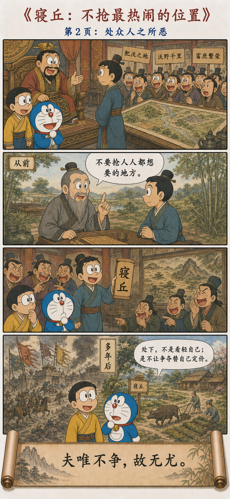
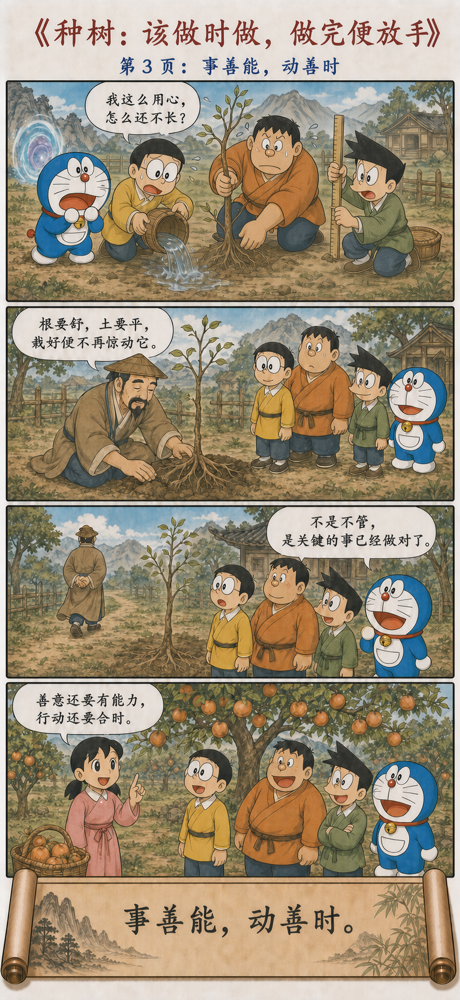
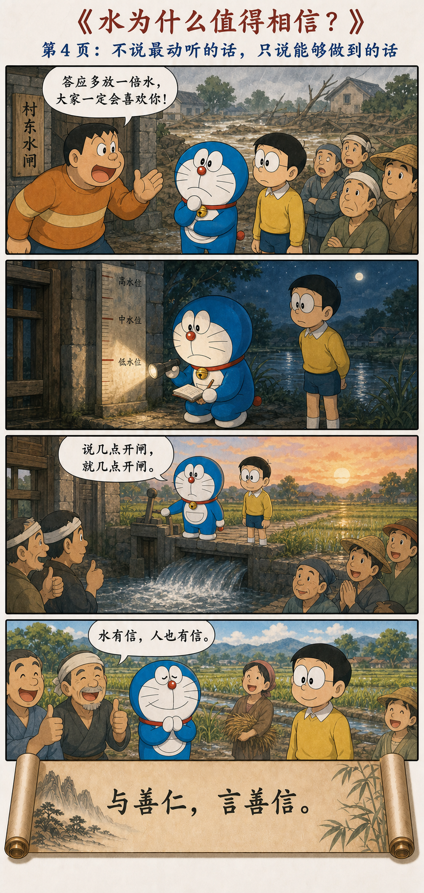

水为什么最接近“道”
Why Water Comes Closest to the Way
上善若水。
水善利万物而不争，
处众人之所恶，故几于道。
居善地，心善渊，
与善仁，言善信，
正善治，事善能，动善时。
夫唯不争，故无尤。
The highest good is like water. Water excels at benefiting all things without contending. It remains where others dislike to be, and so comes close to the Way. In dwelling, choose fitting ground; in mind, be deep; in giving, be humane; in speech, be trustworthy; in governing, bring order; in affairs, be capable; in action, choose the right time. Because there is no contention, there is no blame.
不同传本中有“正善治”与“政善治”等写法。这里采用通行文字；无论取哪一种，重点都在于：好的秩序能让人与事各得其所。
Some transmitted versions read “right order” while others read “good government.” Either way, the point is an order in which people and affairs can find their proper place.
最高的善，像水一样
The Highest Good Resembles Water
水滋养草木、供人饮用、推动舟船，却不要求万物先承认它的功劳。它往低处流，进入沟渠、洼地与污浊之处——不是因为水没有力量，而是因为那里正需要它。
Water nourishes plants, sustains people, and carries boats without first demanding recognition. It flows into channels, hollows, and places others avoid—not because it lacks strength, but because that is where it is needed.
所以“上善若水”并不是一句泛泛的“做人要温柔”。老子紧接着列出七种具体能力：位置要合适，内心要深静，待人要仁厚，说话要可信，治理要有秩序，做事要有本领，行动还要合时。
“The highest good is like water” is therefore more than a vague call to gentleness. Laozi immediately names seven concrete capacities: fitting position, inner depth, humane relations, trustworthy speech, orderly governance, practical competence, and timely action.
水的善，不只是性格好
Water's Goodness Is More Than a Pleasant Temperament
一个人态度温和，却总是失信，不能说“善”；一个领导愿意听大家讲话，却没有能力把事情组织起来，也还不够；一个方案出发点很好，但来得太早或太晚，仍然可能失效。
A gentle person who repeatedly breaks promises is not yet good. A leader willing to listen but unable to organize the work is not enough. A well-intentioned plan may still fail if it arrives too early or too late.
水之所以值得老子用来比喻“上善”，就在于它把善意、能力、秩序和时机放在了一起。它不是只有姿态，而是真的能让生命发生。
Water merits Laozi's comparison because it unites goodwill, ability, order, and timing. It is not merely a posture; it actually enables life.
从位置、内心，到能力与时机
From Position and Inner Depth to Ability and Timing
分水、择地、栽树，以及守信
Diverting Water, Choosing Ground, and Planting a Tree Well




不和水硬碰硬，才真正有能力治理水
Governing Water Without Fighting It Head-On
古籍记载，秦国蜀郡太守李冰凿开离堆、疏通江流，使成都平原得以灌溉。今天我们熟悉的都江堰，以分水、排沙和引流共同工作：洪水有去处，田地有水用，水流不必被彻底截断。
Ancient records credit Li Bing, governor of Shu under Qin, with cutting through Lidui and channeling the river to irrigate the Chengdu Plain. The system known today as Dujiangyan combines diversion, sediment control, and regulated flow: floods have an outlet, fields receive water, and the river need not be completely blocked.
这很接近“正善治，事善能”。李冰不是对洪水说“你必须服从我”，而是先理解河流怎样流、泥沙怎样走、旱季与雨季各需要多少水，再用工程让这些力量互相配合。
This comes close to “bring order in governing; be capable in affairs.” Li Bing does not command the flood to submit. He studies flow, sediment, and the different needs of dry and rainy seasons, then builds a system in which those forces can work together.
真正的治理，不是处处显示控制，
而是让力量各有去处。
True governance does not display control everywhere; it gives each force a fitting course.
“处下”不是看轻自己
Taking the Lower Place Is Not Self-Disparagement
《列子·说符》讲，孙叔敖临终前嘱咐儿子：楚王若要封赏，不要接受人人争抢的肥沃之地，而可请求名声不好、位置偏僻的寝丘。后来楚王果然赐给美地，他的儿子辞谢，只请求寝丘。
The “Explaining Conjunctions” chapter of the Liezi tells how Sun Shuao instructed his son not to accept the rich land everyone would covet, but to request the obscure and ill-regarded Qinqiu. When the king later offered a fine fief, the son declined it and asked for Qinqiu instead.
这个选择并不是“我只配得到最差的”，而是没有把价值交给众人的拥挤来决定。所谓好地方，可能同时也是争夺最激烈、最难长久保有的地方；没人看好的位置，反而可以安稳经营。《列子》用“至今不失”收束这个故事。
The choice does not mean “I deserve only the worst.” It refuses to let a crowd's desire determine value. A celebrated place may also invite the fiercest contention and be hardest to keep, while an overlooked place can be cultivated steadily. The Liezi closes by saying it was “not lost thereafter.”
“处众人之所恶”真正值得借鉴的，不是要求人忍受伤害，而是提醒我们：不必因为一个位置不显眼，就否定它的真实用途；也不必为了证明自己成功，挤进所有人正在争夺的赛道。
The lesson is not to endure harm. It is that an unglamorous position may still have real use, and that proving success does not require entering every crowded contest.
做得太多，也可能妨碍生长
Doing Too Much Can Obstruct Growth
柳宗元《种树郭橐驼传》写了一位特别会种树的人。别人天天察看、抚摸，甚至扒开树皮、摇动树根，仿佛越忙越负责，结果反而伤害了树。郭橐驼的方法是：栽种时让根舒展、土平整、旧土保留、培土紧实；做完以后，不再反复惊动它。
In Liu Zongyuan's parable, other growers inspect and touch their trees constantly, even scratching bark and shaking roots. Their busyness looks like care but harms the trees. Guo Tuotuo instead spreads the roots, levels and firms the familiar soil, and then stops disturbing what has been properly planted.
他并不是什么都不做。恰恰相反，关键步骤做得非常专业，这叫“事善能”；知道何时栽、何时停手，这叫“动善时”。如果能力不足，只把“不干预”当借口，树一样长不好；如果时机不对，再用力也可能徒劳。
He is not doing nothing. The crucial steps are performed with expertise—capability in affairs. Knowing when to plant and when to stop is timely action. Without skill, non-interference becomes an excuse; without timing, effort can still be wasted.
几个很普通，却很具体的例子
Ordinary but Concrete Examples
一个团队里，有人搭好共享文档、补全数据、处理交接，让所有人的工作都顺畅起来。他未必站在台上，却像水一样进入每一道缝隙。这不是“没有存在感”，而是在创造基础设施。
In a team, someone builds the shared documents, completes the data, and handles handoffs so everyone's work can flow. This is not invisibility; it is the creation of infrastructure.
一位老师不急着替学生说出答案，而是在学生刚好能跨出下一步时给一点提示。这不是少教，而是“动善时”：帮助来得恰到好处，能力才真正属于学生。
A teacher does not rush to provide the answer, but offers a clue just as the student can take the next step. This is timely action: help arrives in a form that allows the ability to become the student's own.
一个领导遇到问题时，不只说“大家辛苦了”，而是明确责任、协调资源、兑现承诺。仁厚、守信和治理能力必须同时存在，善意才不会停在口号里。
When a problem arises, a leader does more than say “thank you for your hard work.” Responsibilities are clarified, resources coordinated, and promises kept. Humanity, trust, and governance must coexist if goodwill is to become more than a slogan.
不争，不等于放弃原则和边界
Non-Contention Does Not Abandon Principles or Boundaries
水不争高低，却会绕开石头、冲刷河岸，也会在堤坝失效时形成洪流。因此，“不争”不能被解释成对伤害保持沉默，更不能要求弱者永远退到别人不想去的地方。
Water does not contend for rank, yet it moves around rock, reshapes banks, and becomes a flood when barriers fail. Non-contention cannot mean silence before harm, nor can it require the vulnerable always to occupy places others reject.
老子反对的是把证明自己、压过别人当成行动的中心。该拒绝时明确拒绝，该治理时有能力治理，该行动时不迟疑——这些同样可以是“若水”。不争的是虚荣，不放弃的是责任。
Laozi resists making self-display and domination the center of action. Clear refusal when needed, capable governance when required, and decisive action at the right time can all be water-like. What is released is vanity; what remains is responsibility.
不必打败谁，也能成为重要的力量
A Force Can Matter Without Defeating Anyone
都江堰让河流的力量各有去处，寝丘让价值离开众人的争抢，郭橐驼则在关键时刻把关键事情做对。三个故事共同说明：不争不是退缩，而是把注意力从“我有没有压过别人”，转回“事情是否真正得到成全”。
Dujiangyan gives the river's forces a course; Qinqiu separates value from the crowd's desire; Guo Tuotuo does the essential work at the essential moment. Together they show that non-contention is not retreat. It redirects attention from defeating others to enabling the work itself.
我的力量不必通过打败你来证明；
我能够帮助万物生长，这本身就是力量。
My strength need not be proved by defeating you. Helping things grow is itself a form of strength.
原典与故事出处
Primary Text and Story Sources
中国哲学书电子化计划：《道德经》第八章 · 《老子道德经校释》第八章
Chapter 8 of the Daodejing and a textual study of its transmitted variants.
《华阳国志·蜀志》 · 《列子·说符》 · 柳宗元《种树郭橐驼传》
The Chronicles of Huayang, the “Explaining Conjunctions” chapter of the Liezi, and Liu Zongyuan's “Biography of Guo Tuotuo the Tree Planter.”